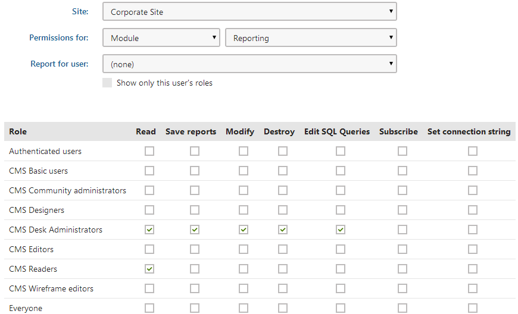

Reporting security
You can configure access to reporting features in the Permissions application. Choose the permission matrix for Module -> Reporting and assign the available permissions to the appropriate user roles.

Permission matrix of the Reporting module
|
Permission |
Description |
|
Read |
Allows users to view existing reports. |
|
Save reports |
Allows users to save reports into the report archive. |
|
Modify |
Allows users to create, modify and delete reports. This also grants permission to subscribe to reports. |
|
Destroy |
Allows users to delete the version history of reporting objects. |
|
Edit SQL queries |
Allows editing of the queries used to retrieve data for reporting components (graphs, tables and values). This permission is needed to create new reports, but it can be a security risk, since it allows users to run queries against the website's database. |
|
Subscribe |
Allows users to subscribe to reports and their components. Subscription also needs to be allowed for individual reports through their properties. Unauthenticated (public) users cannot subscribe to reports. |
|
Set connection string |
Allows users to change the connection string property of reports and their components. The report uses the specified connection string to access the database when loading data. |
Making reports available on the live site
Open the Reporting application.
Select the report in the tree and switch to the General tab.
Enable the Allow public users to see this report property.
Click Save.
The system now allows you to display the given report on the live site to non-authenticated (public) users. If the property is disabled, the report and all of its components (graphs, tables or values) are always hidden from public users
Specifying connection strings for reports
You can restrict the database-level permissions of the SQL queries used for reporting by registering custom connection strings and assigning them to reports.
Prepare a user account for your Kentico database with the required security configuration.
Edit your application's web.config file.
Add a new connection string into the <configuration><connectionStrings> section.
Enter authentication information (the user id and password) for the appropriate database user account.
<add name="CMSReadOnlyConnectionString"connectionString="Persist Security Info=False;database=DBName;server=ServerName;user id=DBUser;password=password;Current Language=English;Connection Timeout=240;"/>Open the Settings application.
Select the Security & Membership category.
Choose the Default report connection string (in the Reporting section).
Connection string names
The setting loads the list of connection strings from the web.config and displays their name attribute values. The (default) option represents the CMSConnectionString added by the application's initial database installation.
The system assigns the specified connection string to newly created reports. By default, all existing reports also inherit the connection string value from this setting.
Assigning a connection string to a specific report
Open the Reporting application.
Edit any reports for which you wish to set a non-default connection string.
On the General tab, uncheck the Inherit box below the Connection string property and select a different option. You can also override the connection string value for individual reporting components (graphs, tables and values).
The system now uses the assigned connection string when executing the queries of reports. This limits the functionality of the queries according to the database permissions of the user account specified in the connection string. Only users who have the Set connection string permission for the Reporting module are allowed to change the connection strings of individual reports.